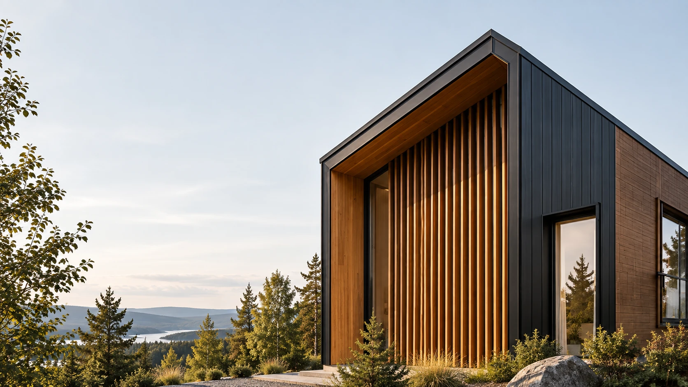
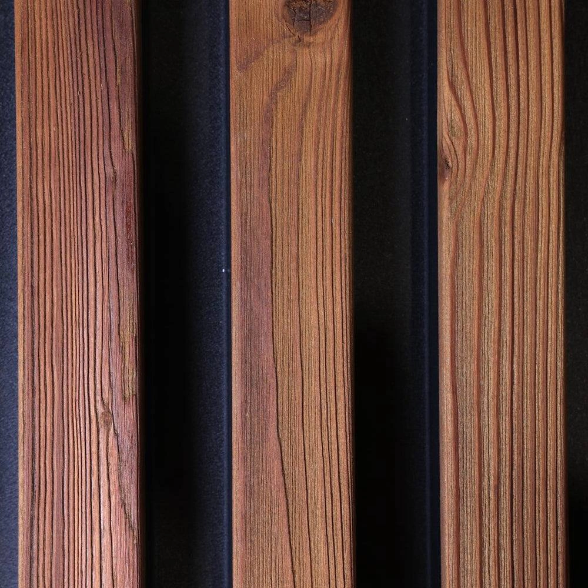
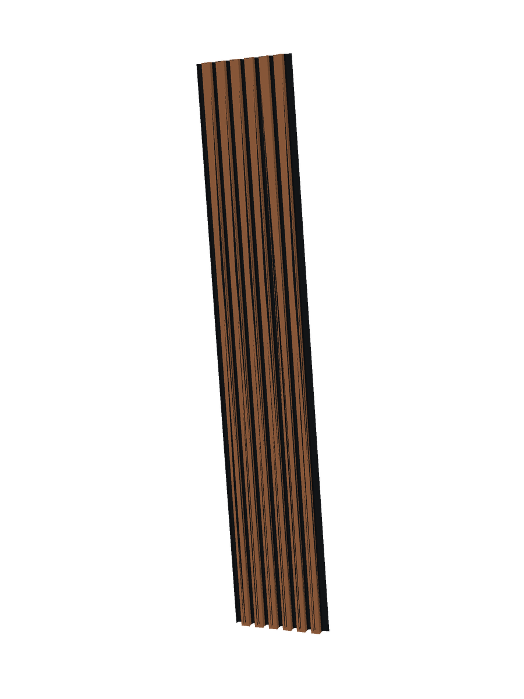
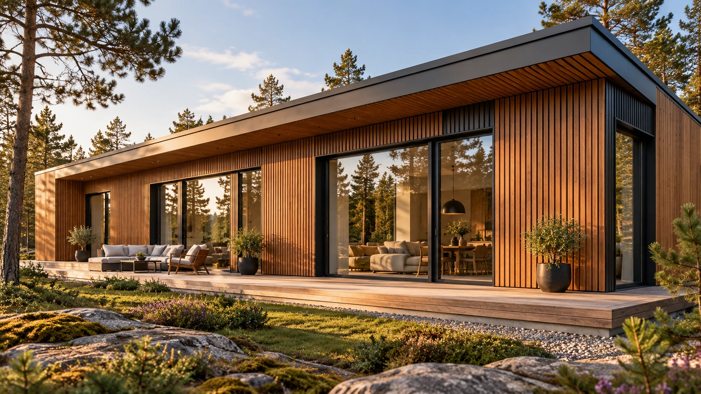
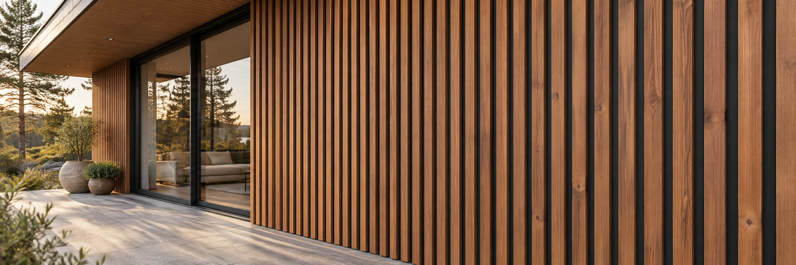

Современные
фасадные панели
Для отделки домов и входных зон.
Закажите панели отдельно или с монтажом.

Фасадные панели в проектах
Фасады, входные зоны и детали отделки. Нажмите на фото, чтобы рассмотреть материал ближе.
Как создаётся фасадная панель

Термообработка сосны
Северную сосну обрабатывают высокой температурой и паром. Древесина становится стабильнее и устойчивее к влаге.
Структурирование поверхности
Каждую рейку обрабатывают отдельно, раскрывая природный рельеф древесины и подчёркивая годичные кольца.
Защитное покрытие
Дерево получает защитно-декоративное покрытие. Для основания используют оцинкованную сталь с матовым покрытием Granite® Ultramat.
Конструкция фасадных панелей
- Материал ламелей
- Термососна
- Формат панели
- 451 × 2400 мм
- Рабочая ширина
- 415 мм

- Основание
- Оцинкованная сталь
- Сечение ламели
- 40 × 18 мм
- Покрытие основания
- Granite® Ultramat
Сталь ArcelorMittal · Покрытие 35 мкм · Матовый чёрный RAL 9005

Фасадные панели
от Baltimera
Производим и продаём фасадные панели для частных домов и строительных проектов. Работаем с владельцами домов, строителями, архитекторами и дизайнерами.
Выберите поставку панелей или закажите материал с монтажом.
Обсудить проект
Получите предложение
для вашего фасада
Оставьте контакт и укажите, нужны ли вам только панели или панели с монтажом.